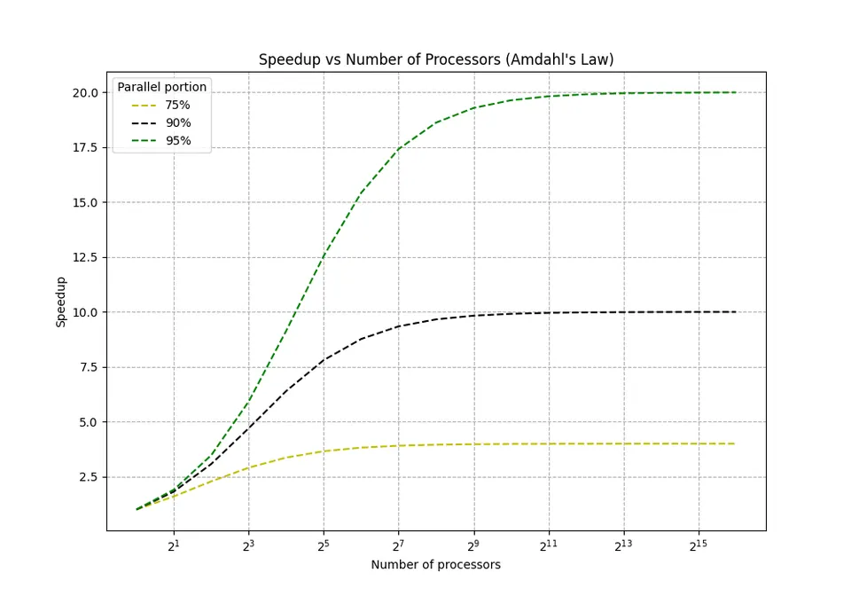

Evaluating a parallel program means more than asking whether it runs faster with more processors. Good performance analysis looks at how much faster it becomes, how efficiently it uses additional resources, where time is lost, and whether the behavior remains stable as the workload or machine size grows.
The most useful measurements combine application-level metrics such as latency and throughput with parallel-specific metrics such as speedup, efficiency, load balance, communication cost, synchronization time, and scaling behavior.
I. Throughput
A simple definition is:
$$ \text{Throughput} = \frac{\text{completed work}}{\text{elapsed time}} $$
For example, if a program processes 12,000 images in 60 seconds:
$$ \text{Throughput} = \frac{12000}{60} = 200 \text{ images/s} $$
II. Latency
For one operation:
$$ \text{Latency} = t_{\text{finish}} - t_{\text{start}} $$
When many operations are measured, the average alone may hide slow outliers. Percentiles such as p50, p95, and p99 latency are often more informative for services and irregular workloads.
III. Speedup
$$ S_p = \frac{T_1}{T_p} $$
where:
Example:
If a computation takes 100 seconds on one processor and 28 seconds on four processors:
$$ S_4 = \frac{100}{28} \approx 3.57 $$
The ideal speedup with four processors is $4$, so this result is good but not perfectly linear.
Speedup can occasionally be superlinear, where $S_p > p$. This does not mean the processors are violating the usual scaling limits. It can happen because the parallel run has a more favorable cache working set, reduces paging, or changes the algorithm's effective behavior.
IV. Efficiency
$$ E_p = \frac{S_p}{p} $$
It is often expressed as a percentage:
$$ E_p(\%) = \frac{S_p}{p} \times 100 $$
Using the previous example:
$$ E_4 = \frac{3.57}{4} \approx 0.893 = 89.3\% $$
An efficiency near $1$ indicates that the additional processors are being used effectively. Efficiency usually decreases as the processor count grows because communication, synchronization, and serial work become more significant.
V. Scalability
Two common scaling models are used.
Strong Scaling:
A useful strong-scaling efficiency is:
$$ E_{\text{strong}}(p) = \frac{T_1}{pT_p} $$
Weak Scaling:
If $T_1$ is the runtime for one unit of work on one processor and $T_p$ is the runtime for $p$ units of work on $p$ processors, one common weak-scaling efficiency is:
$$ E_{\text{weak}}(p) = \frac{T_1}{T_p} $$
A value near $1$ indicates that runtime stayed nearly constant while the total workload grew.
VI. Load Balancing
If worker execution times are $T_1, T_2, \ldots, T_p$, a simple imbalance indicator is:
$$ \text{Imbalance} = \frac{T_{\max}}{T_{\text{avg}}} $$
where:
$$ T_{\text{avg}} = \frac{1}{p}\sum_{i=1}^{p} T_i $$
An imbalance close to $1$ is desirable. Larger values indicate that one or more workers are doing substantially more work than the others.
Common causes of imbalance include:
Dynamic scheduling, work queues, work stealing, and finer-grained task decomposition can improve balance, although they introduce scheduling overhead.
VII. Overhead
A useful total-overhead definition is:
$$ T_o = pT_p - T_1 $$
Here, $pT_p$ is the total processor-time consumed by the parallel run, while $T_1$ is the useful work represented by the single-processor baseline.
The cost of a parallel execution is:
$$ C_p = pT_p $$
A parallel algorithm is called cost-optimal when its total cost is asymptotically comparable to the best sequential execution time.
VIII. Resource Utilization
Resource utilization should therefore be interpreted together with throughput, latency, efficiency, and hardware-counter data.
IX. Communication-to-Computation Ratio
Parallel performance often depends on how much useful computation is performed for each unit of communication.
A conceptual ratio is:
$$ \text{CCR} = \frac{T_{\text{communication}}}{T_{\text{computation}}} $$
Lower communication-to-computation ratios are generally easier to scale. If communication grows faster than useful computation, adding processors can eventually make the program slower.
For distributed-memory systems, important communication costs include:
For shared-memory systems, analogous costs include:
Amdahl's Law, introduced by Gene Amdahl in 1967, estimates the speedup available for a fixed-size workload when only part of the program can benefit from parallel execution.
If a fraction $P$ of the execution time can be parallelized and the remaining fraction $1-P$ must execute serially, the idealized speedup on $n$ processors is:
$$ S(n) = \frac{1}{(1-P) + \frac{P}{n}} $$
Where:
Important Points:
$$ \lim_{n\to\infty} S(n) = \frac{1}{1-P} $$
For example, if $P=0.95$, then even infinitely many processors would give an idealized maximum speedup of:
$$ S_{\max} = \frac{1}{0.05} = 20 $$
If $P=0.99$, the corresponding limit is:
$$ S_{\max} = \frac{1}{0.01} = 100 $$
This illustrates why apparently small serial fractions become important at large processor counts.
Practical Implications:
Amdahl's Law also explains why optimization must be evaluated end to end. Suppose 80% of a program is accelerated by a factor of 10 while the remaining 20% is unchanged:
$$ S = \frac{1}{0.2 + \frac{0.8}{10}} = \frac{1}{0.28} \approx 3.57 $$
Even though most of the program became ten times faster, the complete application becomes only about $3.57\times$ faster.

The graph illustrates the relationship between speedup on the y-axis and the number of processors on the x-axis for different values of the parallel fraction $P$. Larger values of $P$ produce better scaling, but every curve eventually bends away from ideal linear speedup because the serial fraction remains.
Amdahl's Law should not be interpreted as saying that large machines are useless. It models a fixed-size problem. In practice, larger machines are often used to solve larger problems, not only to solve the same problem faster. This is the motivation behind weak-scaling analysis and related models such as Gustafson's Law.
For a workload that grows with the number of processors, Gustafson's Law expresses scaled speedup as:
$$ S_G(p) = p - \alpha(p-1) $$
where $\alpha$ is the measured serial fraction of the scaled workload. Amdahl's and Gustafson's views answer different questions:
Performance measurement should be systematic and reproducible. A single timing result is rarely sufficient because parallel execution is affected by scheduling, cache state, network traffic, frequency scaling, operating-system activity, and input-dependent behavior.
Before profiling or monitoring, establish a reliable measurement procedure:
I. Profiling
Important questions include:
There are two common profiling approaches:
Tools for Profiling in Parallel Computing:
| Tool | Description | Useful Features | Typical Use |
|---|---|---|---|
| gprof | Traditional GNU function profiler | Flat profile and call graph | Basic profiling of instrumented native applications compiled with -pg |
| perf | Linux performance-analysis toolkit | Sampling, hardware counters, call stacks, scheduler events | CPU hotspots, cache misses, branch behavior, context switches |
| Intel VTune Profiler | CPU and threading performance analyzer | Hotspots, concurrency, memory access, microarchitecture analysis | Thread scaling, CPU bottlenecks, memory-bound code |
| Valgrind / Callgrind | Dynamic instrumentation framework | Instruction-level profiling, call counts, simulated cache behavior | Detailed CPU investigation when high execution overhead is acceptable |
| NVIDIA Nsight Systems | System-wide CPU/GPU timeline profiler | CUDA activity, CPU threads, synchronization, kernel launches, transfers | Understanding CPU-GPU overlap and scheduling |
| NVIDIA Nsight Compute | GPU kernel profiler | Memory throughput, occupancy, instruction and warp metrics | Detailed CUDA kernel optimization |
| HPCToolkit | Performance tools for HPC applications | Sampling, calling-context profiles, CPU/GPU analysis | Large parallel applications and scaling studies |
| mpiP | Lightweight MPI profiling library | Per-call and per-rank MPI communication statistics | Identifying communication-heavy MPI code |
Steps in Profiling Parallel Programs:
Timing parallel code requires care because different clocks answer different questions.
For an MPI region, one common pattern is:
MPI_Barrier(MPI_COMM_WORLD);
double start = MPI_Wtime();
/* Parallel operation being measured */
double local_elapsed = MPI_Wtime() - start;
double elapsed;
MPI_Reduce(
&local_elapsed,
&elapsed,
1,
MPI_DOUBLE,
MPI_MAX,
0,
MPI_COMM_WORLD
);Taking the maximum process time reflects the fact that the parallel phase is not complete until its slowest participating process finishes.
The barrier in this example is appropriate only when the measurement intentionally requires aligned start times. Adding barriers that are not present in the actual algorithm can change behavior and produce an unrealistic measurement.
A simple strong-scaling study keeps the problem fixed and measures:
| Processors | Runtime | Speedup | Efficiency |
|---|---|---|---|
| 1 | $T_1$ | $1.0$ | $100\%$ |
| 2 | $T_2$ | $T_1/T_2$ | $S_2/2$ |
| 4 | $T_4$ | $T_1/T_4$ | $S_4/4$ |
| 8 | $T_8$ | $T_1/T_8$ | $S_8/8$ |
A useful plot shows processor count against runtime, speedup, and efficiency. The point where additional processors provide little improvement is the scaling knee for that workload and configuration.
II. Monitoring
Important monitoring targets include:
High-level system metrics help identify when a problem occurs, while profilers and traces help explain why it occurs.
Tools for Monitoring in Parallel Computing
| Tool | Description | Useful Features | Typical Use |
|---|---|---|---|
| Nagios | Infrastructure and service monitoring system | Health checks, alerts, plugin ecosystem | Host and service availability |
| Prometheus | Metrics collection and time-series monitoring | Pull-based metrics, PromQL, alerting, exporter ecosystem | Application and cluster metrics |
| Grafana | Dashboard and visualization platform | Dashboards, multiple data sources, alert visualization | Visualizing Prometheus and other telemetry |
| Zabbix | Infrastructure monitoring platform | Agents, discovery, dashboards, triggers, alerting | Servers, networks, and application infrastructure |
| nvidia-smi | NVIDIA GPU management and monitoring utility | Utilization, memory use, power, temperature, process information | Quick inspection of GPU workloads |
| Slurm accounting tools | HPC scheduler/accounting interfaces | Job state, allocated resources, elapsed time, CPU/memory statistics | Cluster job monitoring and historical resource analysis |
Steps in Monitoring Parallel Systems:
A useful performance workflow is therefore:
Measure baseline
|
v
Identify scaling or latency problem
|
v
Monitor system-level behavior
|
v
Profile the affected application or phase
|
v
Form and test an optimization hypothesis
|
v
Re-measure speedup, efficiency, and correctnessThe central rule is simple: measure before optimizing, explain the bottleneck with evidence, and measure again after every meaningful change.